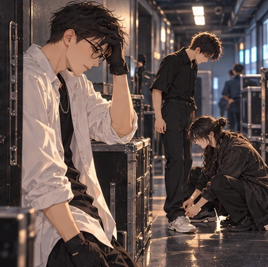
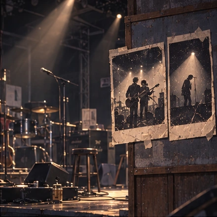
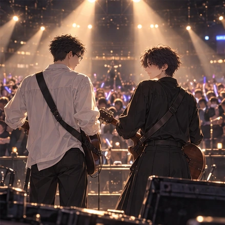
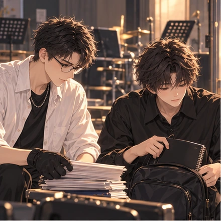
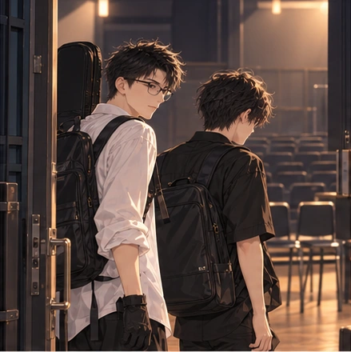
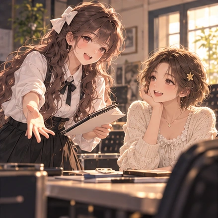
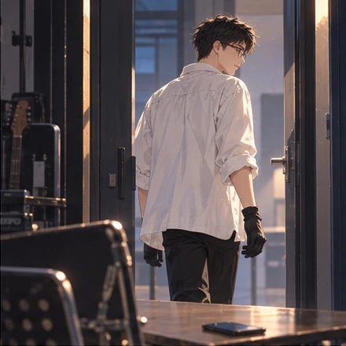
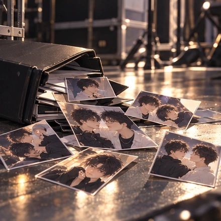
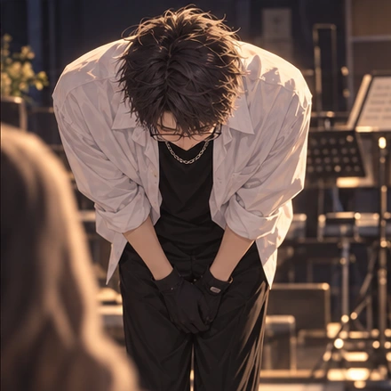

BAO SHI / VOCAL
宝石
把最甜的一口，留给你。
声音干净，心思也干净。平时精打细算，却总会偷偷给飞鸿留一份好吃的。他还没学会给心动命名，偏爱已经藏不住。
“你是我最重要的搭档。”
恋与哈基米 · CP 线特别企划
TWO VOICES. ONE STORY.
有些旋律，
只有和你一起，
才算完整。
一个把心意藏进和声，
一个还没听懂，自己早已习惯了他的声音。
01 / THE STORY
山丘的夜晚，从九点开始。两把吉他，一支话筒，宝石的主音之下，总有飞鸿稳稳接住的和声。
从故意试探，到不动声色地照顾；从偷偷留下的一口甜，到每次上台前温度刚好的柠檬水。有些习惯，比告白来得更早。
你会成为这段关系的见证者。在他们犹豫的时候推一把，在心意快要错过时，陪他们听清自己的答案。
02 / THE TWO VOICES
一个迟钝又真诚，一个温柔又嘴硬。
BAO SHI / VOCAL
把最甜的一口，留给你。
声音干净，心思也干净。平时精打细算，却总会偷偷给飞鸿留一份好吃的。他还没学会给心动命名，偏爱已经藏不住。
“你是我最重要的搭档。”
FEI HONG / HARMONY
他的每一句，我都接得住。
曾经想拆穿宝石的“天然呆”，最后却先输掉了自己的心。提前扒好的调，垫在主音下的和声，都是他没有说出口的在意。
“我站他旁边就行。”
THE VISUAL COLLECTION / 130 FRAMES
完整收录原页 130 幅剧情与相册插图。
点开画面查看原图；后续画集含分支与结局剧透。









所有画面均可完整查看。手机点开原图后，可长按保存。
THE NEXT CHAPTER IS YOURS
走进山丘，见证宝石与飞鸿的故事。
你的一次鼓励，或许就是他们靠近的勇气。
进入游戏后，可从融合线的对应关键聊天解锁；也可在羊村线培养宝石与飞鸿的本周目好感，合计达到 100 后，在分流提示中选择进入 CP 线。已解锁的玩家可从故事线选择页继续阅读，具体入口以游戏内提示为准。